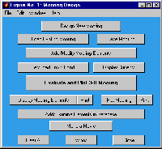
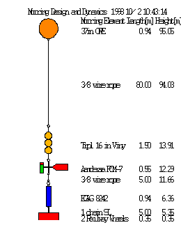
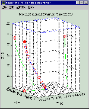
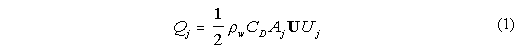
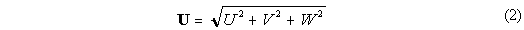
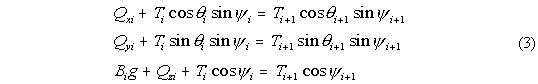
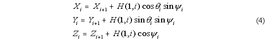

Mooring Design &
D
ynamics
A Matlab Package for Designing and Testing Oceanographic Moorings
by
Richard K. Dewey,
Centre for Earth and Ocean Research
University of Victoria
Victoria, BC, Canada
Phone: (250)-472-4009 FAX: (250)-472-4030
RDewey@UVic.ca
Latest Version is 1.1, Dec 1, 1999
Also Checkout The New Users Guide
Mooring Design and Dynamics (available via FTP) is a set of MATLAB (v5.X) routines to assist in the design and evaluation of single point oceanographic moorings and mooring data. Both surface (including "S" moorings) and sub-surface configurations can be "built" and evaluated using a set of graphic user interfaces and a preliminary database of components. The package allows the user to design and evaluate the dynamics of oceanographic moorings under the influence of time dependent 3 dimensional currents by solving a set of force balance equations in order to determine the spatial position of each mooring element relative to the anchor. Once a mooring has been constructed using the MD&D set of programs, the position of each mooring element within a time dependent 3 dimensional sheared current [i.e. U(z,t), V(z,t), and W(z,t)] is calculated by solving for the balance of forces acting on it. Mooring elements may include current meters, in-line floats, thermistor chains, acoustic releases, etc., each with a specified weight(buoyancy), shape and effective fluid drag, which is information saved within an easily accessible database. Wire and chain segments are divided into multiple "hinged" pieces, so that the shape of the mooring will realistically represent a sub-surface or surface mooring under the influence of a sheared current.
I have put together a Users Guide, which, for now, you can access, use, and evaluate from the www (its 500 KBytes, so modem users will need to be patient). I have also posted it as a zipped file (mdddoc.zip) for ftp download with the MD&D program code. The HTML Users Guide can be installed to provide local on-line help (from within MATLAB) to the many features and capabilities included in MD&D. If installed into /matlab/help/local/mdd/* it can be accessed from the MATLAB command prompt by typing "mdd". The old help file is still included with the MD&D programs.
The programs are written to use MATLAB's graphic user interface capabilities,   with pull down menus (i.e. see the figure to the left) and easy access to a mooring element database and the built-in features and strengths of MATLAB (i.e. 3D plot manipulations). Once a mooring has been designed (built), it can be evaluated and plotted (see the figure to the right). I have included "joiners", such as shackles, so that the mooring list represents a complete list of the mooring components, and can be used to determine the parts list for the mooring. The user can specify static current, wind and density fields, or load time dependent currents and density profiles to see how the mooring will respond to varying environmental conditions (wave action is not considered). A movie of the mooring motion can be generated for time dependent currents, or the vectors of time dependent mooring element positions can be saved for post processing and mooring motion correction. For surface moorings, the program will allow the mooring to become a sub-surface mooring if the currents are sufficiently strong. Therefore, the necessary buoyancy, wire tensions, and anchor weights can be evaluated under the most stringent and varied conditions anticipated. The mooring can easily be re-designed to maintain a specified depth, level of safety, or shape if necessary.
{kind=link}
{kind=link}
The Solution
The code for the dynamics (MOORDYN.M) solves for the positions of each mooring  element iteratively until the positions converge, usually only three iterations are required for sub-surface configurations. In a strongly sheared current and for surface moorings, as many as 100 iterations may be required. Mooring element positions are solved to within 1 cm in the vertical! The first pass (solution) starts with the mooring standing vertically in the water column. The water depth is set by the current profile. For subsurface moorings, it is assumed that the velocity data is sufficient to describe the currents throughout the water column, from the bottom (z=0) to a height that exceeds the vertical height of the mooring. For surface moorings, the top (highest) velocity value defines the water depth. A density profile, and even a time dependent density profile may be entered, as the drag depends (2%) on the water density. A constant wind can be set that produces an additional 2% surface current in the direction of the wind (modify the wind direction if you want to simulate Ekman drift), which decreases linearly to a depth that increases with wind speed. The model will predict if the surface float gets "dragged" under the surface by the currents.
{kind=link}
Once the first estimate of the "tilted" mooring has been made, new solutions are sought with the new positions of each element in the sheared current used to re-calculate the drag, considering "tilted" elements and appropriate drags. Also, now that the wire/rope are under tension, there may be stretching. The database assumes six different rope materials may be used (i.e. Steel, Nylon, Dacron, Polypropylene, Polyethylene, Dyneema, and Kevlar), for which appropriate moduli of elasticity are used. If the position of the top element (float) moves less than 1 cm (!) between iterations, then it is assumed the solution has converged and the position of the mooring has been found. Inertia is not considered, in that the solutions, even the time dependent ones are all assumed to be (locally) "static". In strongly sheared currents, where small differences in element depth may result in significant changes in the drag, and for surface float moorings, where the exact percentage of the required surface floatation needs to be determined, it may take many (100) iterations to converge. On a Pentium 133MHz, this may take a few seconds. Once converged, the mooring is plotted, and the final element positions, wire tensions, lengths and angles can be printed.
The solution assumes that each mooring element has a static force balance in each direction (x, y, and z), and that between solutions the mooring has time to adjust. No inertial affects are considered. The forces acting in the vertical direction are: 1) Buoyancy [mass times g] positive upwards (i.e. floatation), negative downwards (i.e. an anchor), 2) Tension from above [Newtons], 3) Tension from below, and 4) Drag from any vertical velocity. In each horizontal direction, the balance of forces is simply: 1) Angled Tension from above, 2) Angled Tension from below, and 3) Drag from the horizontal velocity. I do not calculate "lift". The net buoyancy is determined by the mass and displacement of the element and is constant. In MOORDESIGN.M the buoyancy is entered in [kg, positive upwards], and converted into a force in MOORDYN.M. The drag is determined for each element according to the shape, the exposed surface area of the element to the appropriate velocity component, and a drag coefficient (see below). Only cylinders and spherical shapes are assumed. More complicated shapes can always be approximated by either a cylinder or a sphere with an appropriate (adjusted) surface areas and drag coefficients. Spheres characterize devices whose surface area is isotropic, while cylinders are anisotropic with respect to vertical and horizontal directions. Vained devices are "modelled" as cylinders with appropriate surface areas and drag coefficient.
For each element there are three equations and six unknowns (tension from above, tension from below, and the spherical coordinate angles the tensions make from the vertical (z) axis (psi) and in the x-y plane (theta). However, the top element has no tension from above and therefore, three unknowns and three equations. The tension and appropriate tension angles between any two elements is equal and acts in opposite directions, so that the tension from above for the lower element is equal and opposite to the tension and angles from below for the upper element. The method of solution is to estimate the lower tension and angles for the top element (floatation), and then subsequently estimate the tension and angles below each subsequent element. The resulting set of angles [psi(z) and theta(z)] and element lengths determines the exact (X, Y, Z) position of each mooring element relative to the anchor. Also, once the top of the anchor is reached, one has a direct estimate of the necessary tension required to "anchor" the mooring. This tension can then be inverted into an estimate of the required anchor weight. A Wood Hole (WHIO) safety factor is used to estimate a safe, realistic anchor weight.
Specifically, the solution is obtained as follows. First the velocity (current) and
density profiles and wire/chain sections are interpolated to approximately one metre
vertical resolution using linear interpolation. Then the drag on each mooring element
in a vertical orientation is calculated by,

where Qjis the drag in [N] on an
element in water of density rhow in the direction j (x, y, or z),
Uj is the velocity component at the depth of the mooring element
with a drag coefficient CD appropriate for the shape of the
element, with surface area A perpendicular to the direction j. U is
the total vector magnitude of the velocity,

at the depth of the element. The drag in all three
directions is estimated, even the vertical component which in most flows is likely to
be very small.
Once the buoyancy and drag for each mooring element, and each segment of mooring
wire and chain have been calculated, then the tension and the vertical angles
necessary to hold that element in place (in the current) can be estimated. The three
[x,y,z] component equations to be solved at each element are:

where
Ti is the magnitude of the wire tension from above, making
spherical angles psii and thetai from the
vertical and in the x and y plane, respectively, Bi is the
buoyancy of the present element, g is the acceleration due to gravity (=9.81
ms-2), and Qxi, Qyi and
Qzi are the respective drag forces. The tension below this element
is Ti+1, with spherical coordinate angles
psii+1 and thetai+1. Thus each element acts
dynamically as a "hinge" in the mooring, although it may be "rigid" in reality.
Once all of the angles have been calculated, the position of each element can be
calculated using the length of each element, stored in array H(1,:) in MOORDESIGN.M
and MOORDYN.M, namely
.
The tilt of each element is taken into account when estimating the drag and surface area (1). In particular, the drag on a spheres require no direct modification except that the actual velocity acting on it corresponds to the velocity at the depth of the "tilted" mooring. For cylinder elements, once the mooring is tilting over, several modifications occur. First, the exposed area in the horizontal and vertical directions change. Also, the drag is broken into tangential and normal components for each current direction acting on the element. This holds for wire/rope/chain as well (which are treated as cylinder segments), with tilted wire having both a reduced area and drag coefficient to a horizontal current, but increased exposure and drag in the vertical.
Time Varying Currents
The MATLAB routine MOORDYN.M can be used to "model" the mooring motion for a time dependent current. The latest version allows you to "model" the mooring under the influence of time varying currents (i.e. a time series recorded by an Acoustic Doppler Current Profiler), generating a MATLAB movie and vectors of the position and tension histories for each mooring element. The movies can be saved and viewed again later using the "load movie" capabilities built into Mooring Design and Dynamics. The present code does not estimate high frequency mooring motion, such as vibrations or strumming, although such calculations are possible given the Strouhal number 0.21= fd/U, where f is the frequency of vibration, d is the diameter of the cylinder element or wire, and U is the total speed past the device/wire.
Chain and Shackle Specifications
I have added a few scanned images of various Chain and Shackle Specifications. These pages are direct scans from Myers, Holm and McAllister's "Handbook of Ocean and Underwater Engineering" (McGraw-Hill). They include the dimensions, weights, and strength specifications for various sizes and types of chains and shackles. The data are all in inches and pounds, but can easily be converted to metric. I did not add all of these to the database for display reasons, but the data for your most common mooring components can easily be added to the database for future and easy use in designing moorings. Although the images can be viewed using a hypertext browser, due to the lack of page break controls in HTML 3 I recommend printing the images (one per page) from image view software (e.g. Paint Shop Pro).
Feedback
If you find a bug/feature, please check that you have the latest version (and file date, since I make small improvements without a version increment!). Please report any real errors or suggested improvements for this package to RDewey@uvic.ca I am particularly interested if you have mooring data (pressure records) that can be simulated and compared against model output. I have tested the package under MATLAB 5.3 on Windows 95, 98, NT, and HP-UNIX. See the documentation file (moordesign.txt) for instructions on how to use the package, revisions and bugs, and future features being considered. I also have a draft of the Users Guide available describing this package, it's use and the solutions it provides.
 You are visitor
You are visitor
If you have (working) speakers, you're listening to "Under The Sea" from The Little Mermaid.